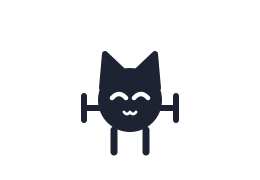
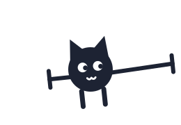
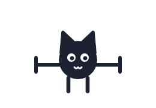
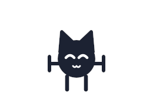

ゴサ（ゴサの答え合わせ）設定表
ひげ＝横向きの誤差棒。短い＝言い切り、長く垂れる＝条件次第。色は墨 #1D2333 と白だけ。原点＝体の中心で、どの表情も同じ枠（差し替えても位置がずれない）。

言い切り：ひげが短い＝確か

指し示し：右のひげを伸ばして指す
暗い背景用（白い縁取り付き。サムネイルの濃い帯の上など）



チャンネルのアイコン（実際の表示の大きさ）
128px 64px 32px 24px